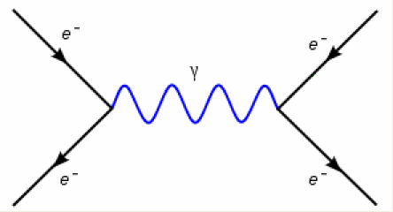

|  | INTERAZIONE ELETTRODEBOLE |
Interazione nucleare deboleUna grande varieta' di fenomeni, come il decadimento beta, la disintegrazione di molte particelle instabili, l'interazione, estremamente poco probabile, dei neutrini con la materia, la cattura nucleare di alcune particelle, ecc., puo' essere spiegata in termini di un'altra forza fondamentale, quella di interazione nucleare debole. La teoria dell'interazione debole ha origine da un lavoro di Fermi del 1933. Riprendendo un'ipotesi formulata qualche anno prima di Pauli, Fermi riusci' a interpretare lo spettro continuo degli elettroni nell'emissione beta. Ciascuno di questi elettroni e' prodotto, insieme a un antineutrino, dal decadimento di un neutrone in un protone. Diagrammi di FeynmanSi potrebbe pensare a due giocatori (elettroni) intenti a scambiarsi un pallone (fotone). In realtà è più corretto descrivere la forza trasmessa dei fotoni in termini di campi prodotti dalle particelle. L'andamento dell'interazione elettromagnetica, e in generale di ogni reazione avente per oggetto le particelle, puo' essere schematizzato mediante i cosiddetti diagrammi di Feynman (come mostrato nella figura in cima alla pagina). Con questa rappresentazione non solo si visualizza lo svolgimento del processo nello spazio e nel tempo, ma si riesce anche a fornire una cera corrispondenza fra le fasi del processo e le espressioni analitiche che descrivono il campo prodotto dalle particelle reali e virtuali coinvolte nell'interazione. Interazione elettrodeboleNonostante le notevoli differenze fra la forza elettromagnetica e la forza debole, la cosiddetta teoria elettrodebole ha messo in evidenza una stretta parentela tra di esse. Questa affinita', convalidata dalla scoperta di Rubbia del quanto mediatore Z0, la cui esistenza e le cui proprietà, insieme a quelle dei bosoni W, erano state previste dalla teoria, fa si' che ormai si considerano le due forze come appartenenti a un'unica classe di interazione, chiamata interazione elettrodebole. |